Lakeland Finland
Where 188,000 Lakes Meet Nordic Luxury
Where 188,000 Lakes Meet Nordic Luxury
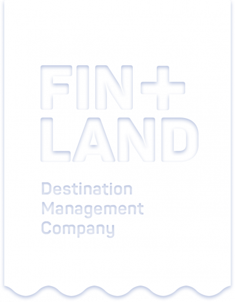
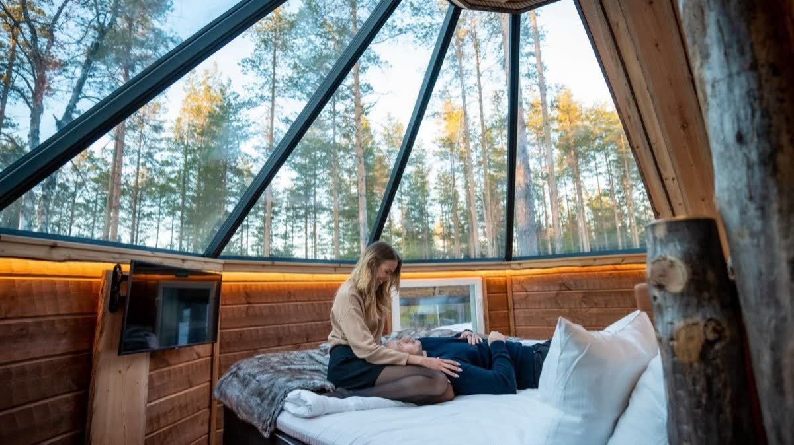
Europe's largest lake district — where pristine water, ancient forests, and the silence of nature create the ultimate escape. Three extraordinary destinations. One seamless journey. All arranged by your local expert.
In the heart of Saimaa — Finland's most celebrated lake region — Järvisydän is a full-service resort offering world-class accommodation, an award-winning cave spa, top-10 dining, and a complete range of lakeland activities.
From glass-roofed Scenery Suites to lakeside Kuru Lake Suites and floating houseboats, every room type frames the water and forest. The resort serves as our primary Lakeland hub, with all experiences and excursions departing from one beautiful location.
Järvisydän welcomes groups from intimate couples' retreats to incentive programmes of 200 guests — the same seamless quality at every scale.
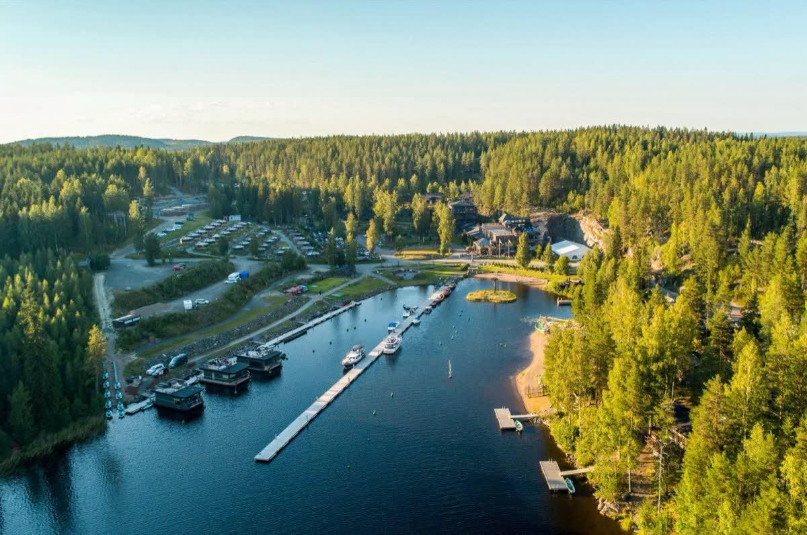
Scenery Suites — Panoramic glass igloos with floor-to-ceiling windows frame the lake and forest from your bed. The glass roof experience your clients dream about — in a full-size luxury suite, not a capsule.
Kota Hotel — Glass-roofed suites frame the night sky and star-filled darkness. Dark luxury suites with lake panoramas and private terraces. The sky is part of the room.
Kuru Lake Suites — Contemporary Finnish design steps from the award-winning restaurant. Private sauna, lake panorama windows, and the most peaceful part of the resort.
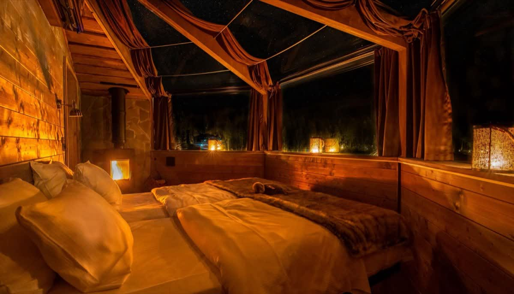
Spring, summer, autumn & winter activities on Europe's largest lake
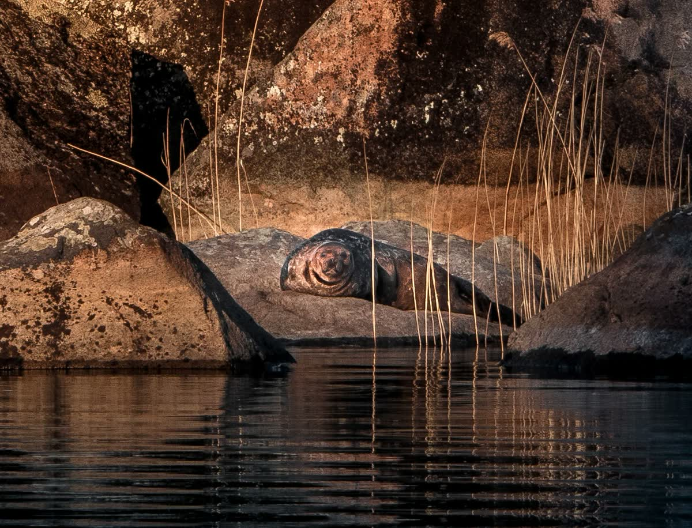
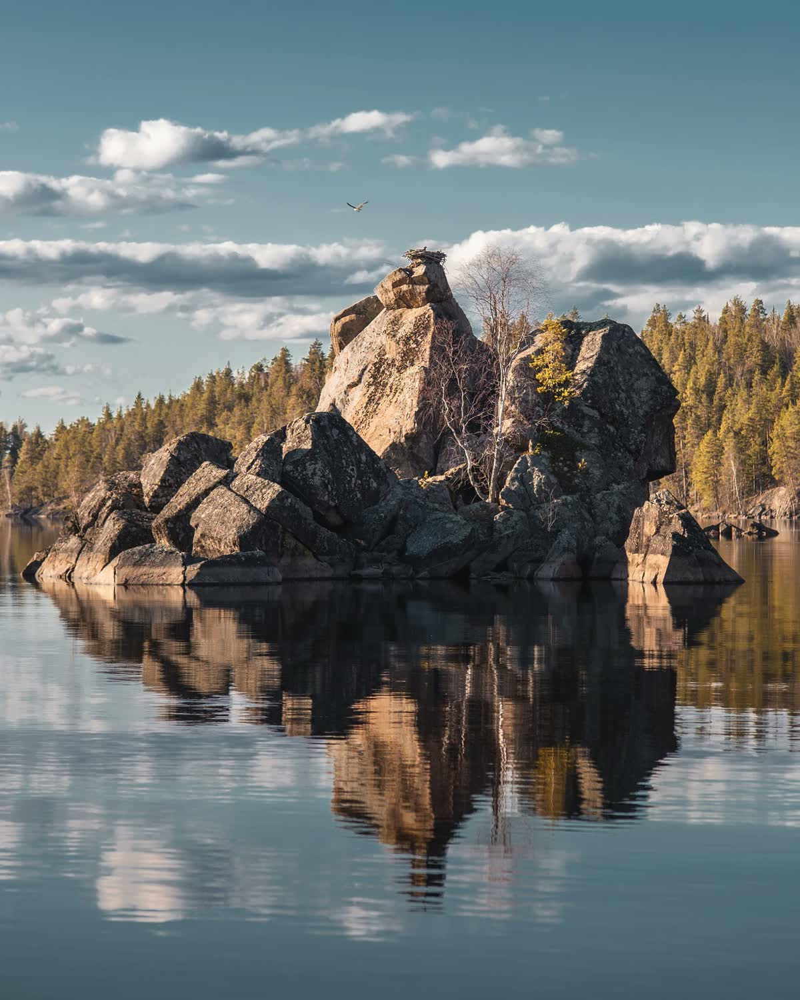
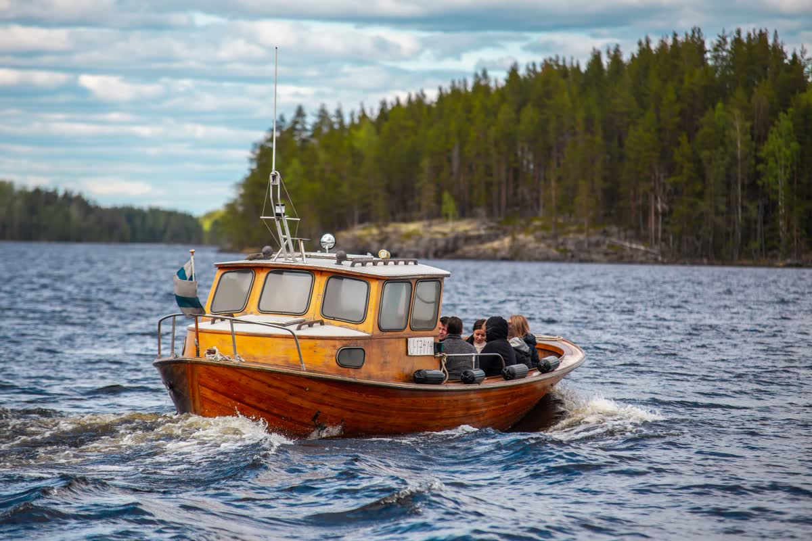
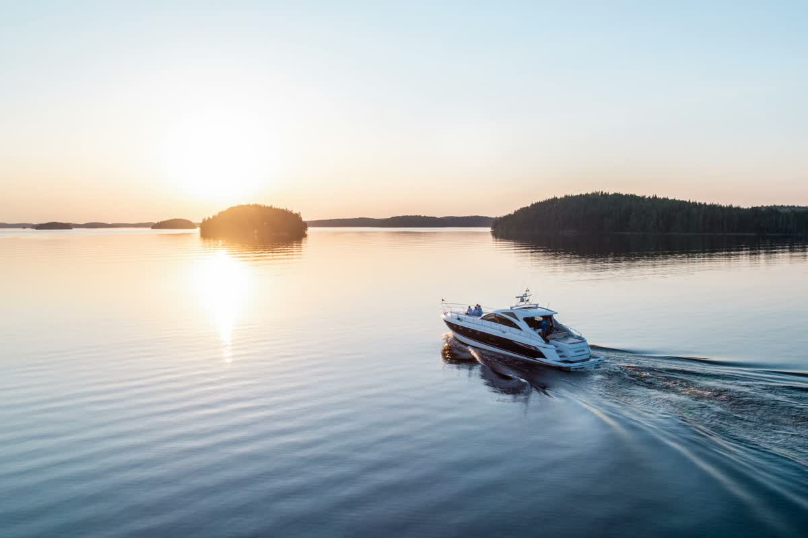
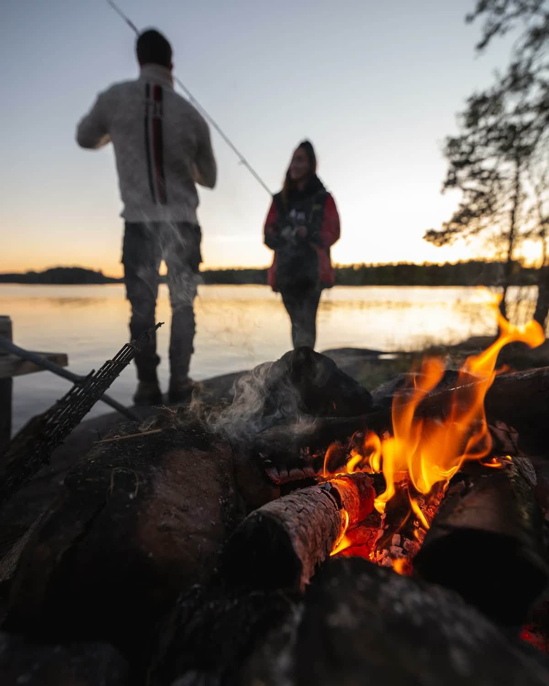
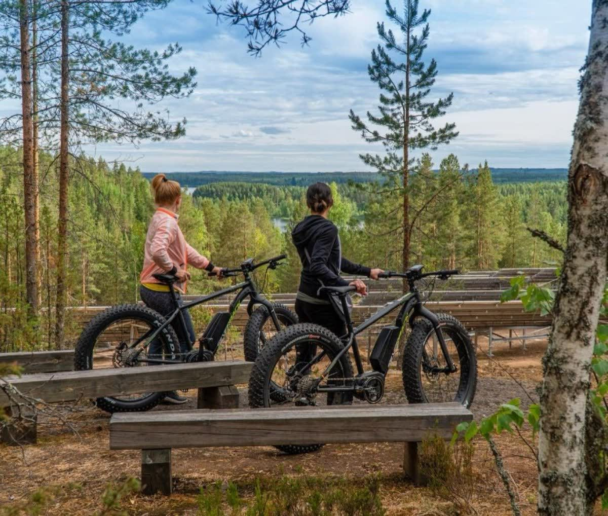
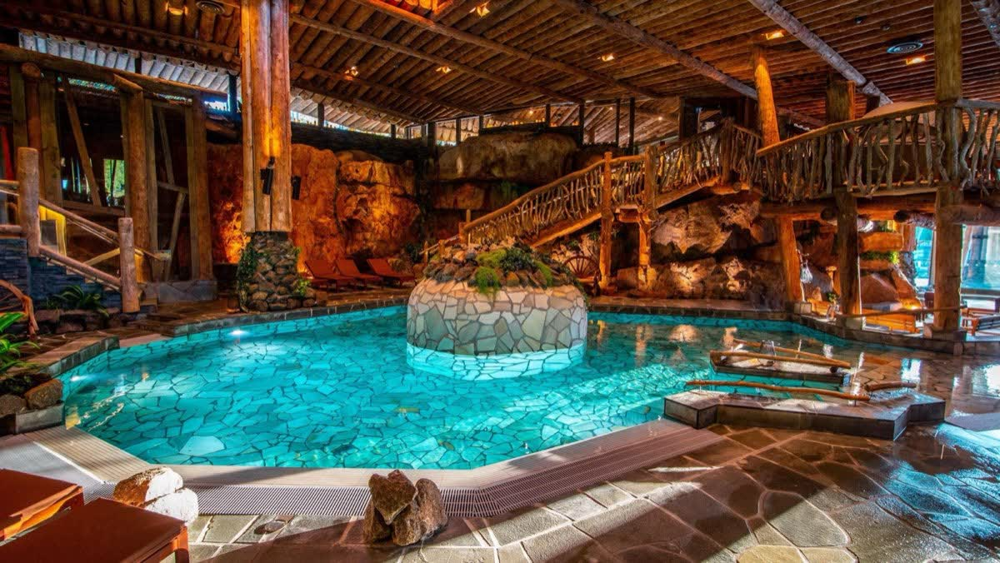
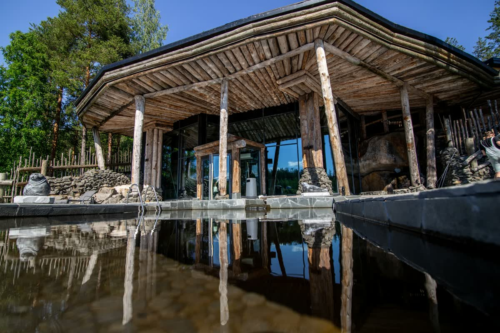
Järvisydän's wellness offering is built around a rare combination of underground stone and open lake — one of the most distinctive spa experiences in Finland.
Cave Spa — Carved into natural rock, this underground spa offers turquoise pools, log-and-stone architecture, and an atmosphere unlike any other wellness space in the Nordics.
Lake Spa — Outdoor pools overlooking Saimaa. Traditional smoke sauna, cold plunge pools, and peat treatments using local ingredients. A holistic journey from underground stone to open sky.
Solitary Restaurant — An acclaimed intimate dining concept where the chef, the ingredients, and the landscape are all within arm's reach. The ultimate Saimaa culinary experience.
Tulimenu — Our signature fire menu experience. Seasonal ingredients cooked over open flame at your table — an interactive dining moment that brings the Finnish campfire tradition indoors.
Kota Restaurant Savonloitsu — The resort's iconic teepee restaurant. Open-flame cooking under a traditional kota roof, smoked meats, and Finnish campfire cuisine.
Dinner Cruise — A floating restaurant on the Saimaa waterway. Multi-course dinner as islands and forests glide past at sunset.
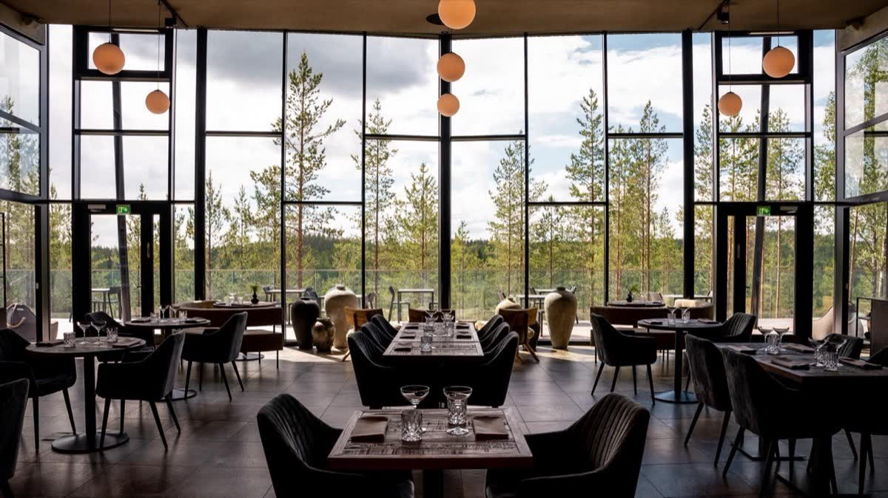
Finland's most versatile resort destination, set in Northern Savonia. Tahko delivers year-round adventure — winter skiing and snowsports meet summer golf, cycling, and water activities — all against a backdrop of rolling lakeland hills.
Summer & Autumn: 200 km of cycling and mountain-bike trails, championship golf, lake cruises, hiking, kayaking, and guided nature experiences. The forested hills and open water create a contrast that changes completely with the seasons.
Winter: 23 ski slopes, cross-country tracks, fat biking on frozen lake, and snowshoeing through silent birch forest. Ice fishing on Nilsiänjärvi lake.
Accommodation: Resort hotels, private villas, and lakeside cabins. Group capacity from small incentive teams to large conference programmes.
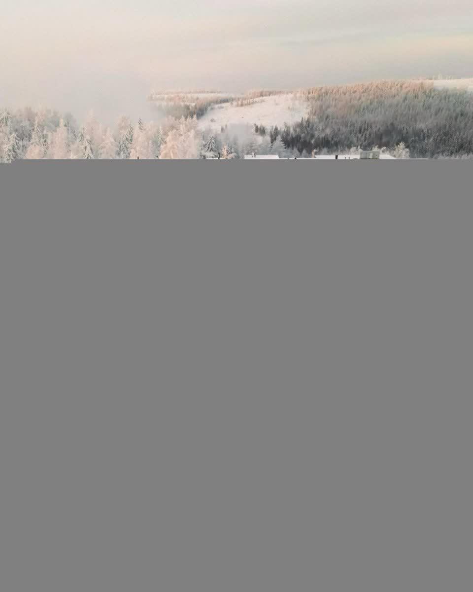
A peaceful lakeside retreat in Puumala, on the shores of Lake Saimaa. Sahanlahti embodies traditional Finnish countryside at its most authentic — rolling farmland, mirror-calm bays, and a rhythm of life measured by the seasons.
For clients who want the full Finnish countryside experience, Sahanlahti offers a genuine alternative to resort-based programmes. The intimacy here is the point — small groups, private villas, and experiences you cannot find on any booking platform.
Activities: Lake swimming from private docks, rowing across morning-mist bays, berry and mushroom picking in season, traditional lakeside sauna rituals, and slow forest walks. Evening bonfire by the water is a standard, not an upsell.
Accommodation: Traditional Finnish villas and lakeside cottages sleeping 8–30 guests. Fully catered or self-catering. Ideal for executive retreats, intimate incentive groups, and private family travel.
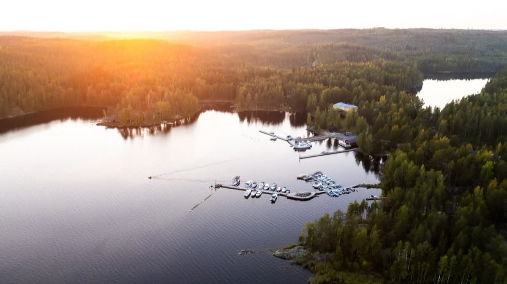
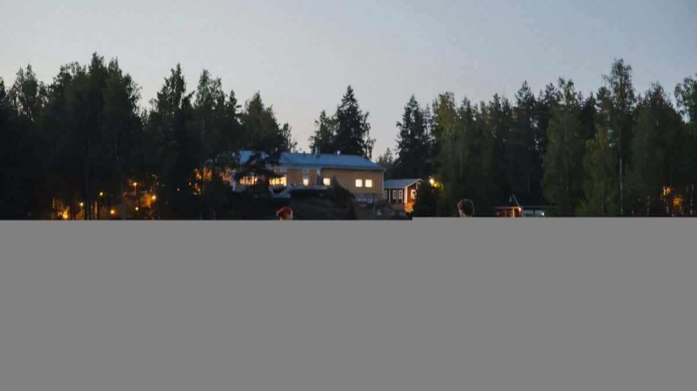
Each destination has its own character. Together they form the complete Finnish lakeland experience.
Järvisydän — flagship resort with cave spa and top dining. Tahko — active adventure, skiing and golf. Sahanlahti — authentic countryside immersion.
We handle all routing, transfers, and logistics across all three — your clients experience the best of each without a single coordination headache.
Programs from 2 to 7 nights — choose your highlights and we build the perfect itinerary
Prices are indicative and vary by season, group size, and accommodation choice. Full custom quotations on request.
Järvisydän is your base, but the Saimaa region holds a collection of authentic boutique resorts and experiences that no booking engine can find. As your local DMC, we open doors others can't.
Sahanlahti Resort — Intimate lakeside retreat with private villas, and farm-to-table dining. The hidden pearl of Saimaa.
Linnansaari National Park — Pristine islands accessible by boat only. Home to the endangered Saimaa ringed seal. Wilderness that earns its name.
Savonlinna & Olavinlinna — Medieval castle, world-famous opera festival, charming lakeside town. A full cultural counterpoint to nature immersion.
This is why you need a DMC — we know every corner personally.
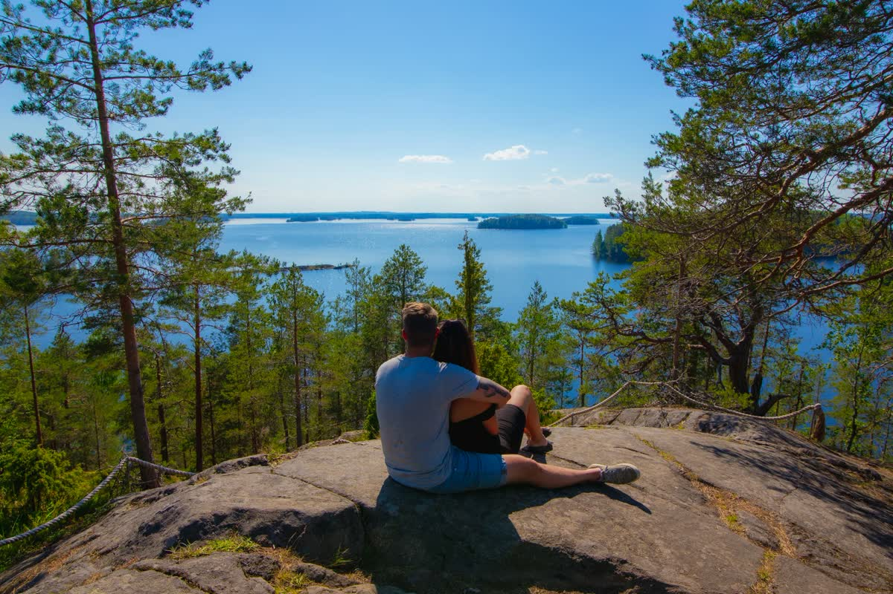
We know hospitality.
Finland DMC is a specialist destination management company covering all of Finland — from the thousand lakes of Saimaa to the Arctic wilderness of Lapland and the design capital Helsinki.
We craft seamless, end-to-end travel experiences for international tour operators. Accommodation, dining, activities, transfers — we bring every element together into one memorable journey across three extraordinary lakeland destinations.
Finland DMC Lakeland Summer 2026 v3.1